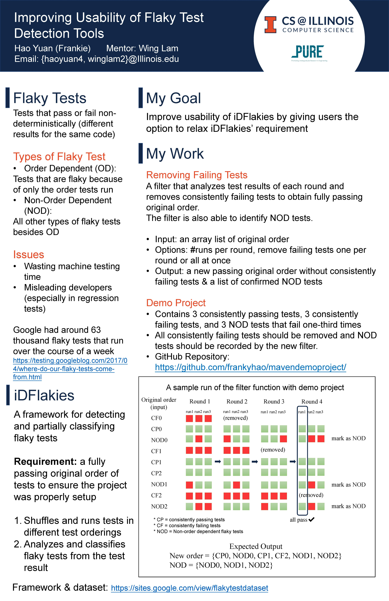

Flaky Tests Detection Tool
Research @UIUC
Since Spring 2019, I am working with Wing Lam, a Ph.D. student at the University of Illionis at Urbana-Champaign, to build a java Continuous Integration testing framework for detecting, classifying, and fixing flaky tests.  Github Repository: github.com/idflakies/iDFlakies iDFlakie Dataset: sites.google.com/view/flakytestdataset/ Wing's personal page: winglam2.web.engr.illinois.edu